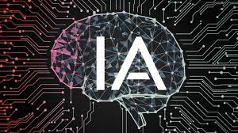

¿Qué son los lenguajes de programación en IA?
Los lenguajes de programación utilizados en inteligencia artificial permiten desarrollar algoritmos y modelos capaces de simular procesos cognitivos humanos como el aprendizaje, la percepción y el razonamiento.
